Teatro
Nany People estreia Segunda Chance no Teatro B32, em São Paulo
Com texto de Bruno Motta e direção de Dan Rosseto, novo espetáculo da atriz e humorista fala sobre tempo, controle e a possibilidade de recomeçar…
1000 matérias — página 4 de 42
Com texto de Bruno Motta e direção de Dan Rosseto, novo espetáculo da atriz e humorista fala sobre tempo, controle e a possibilidade de recomeçar…
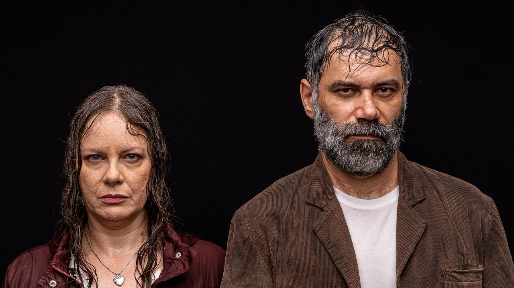
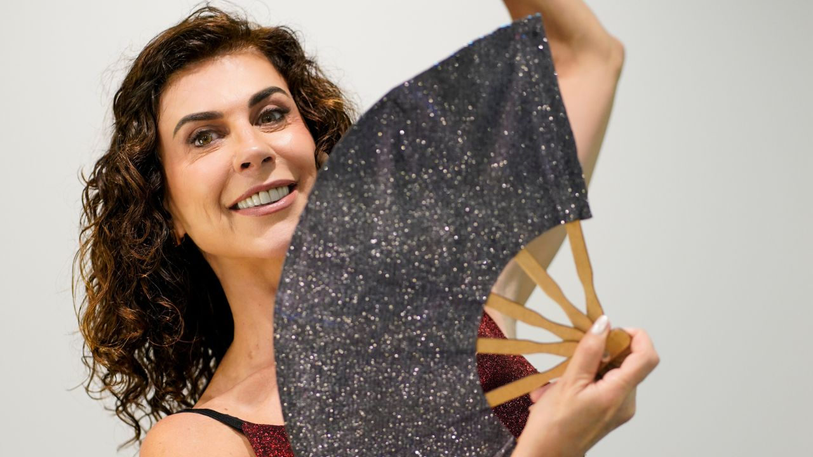
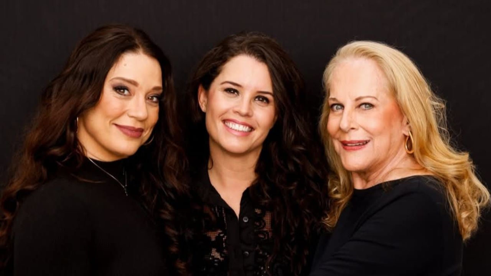
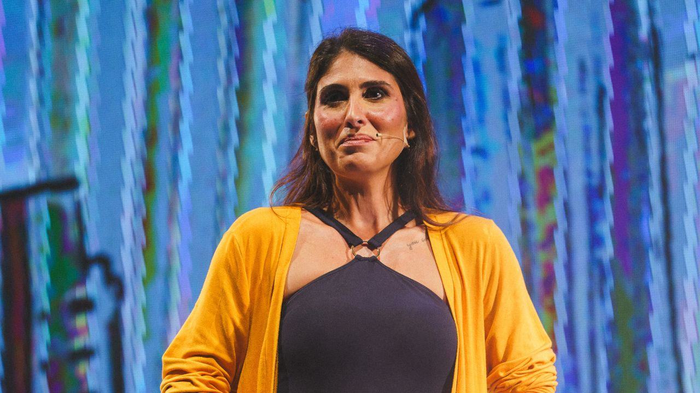
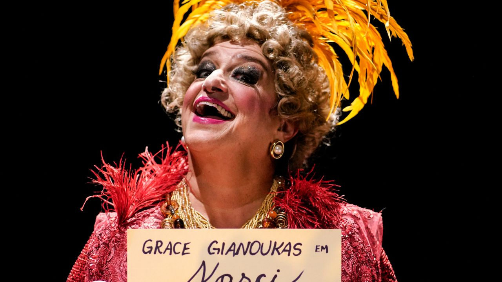
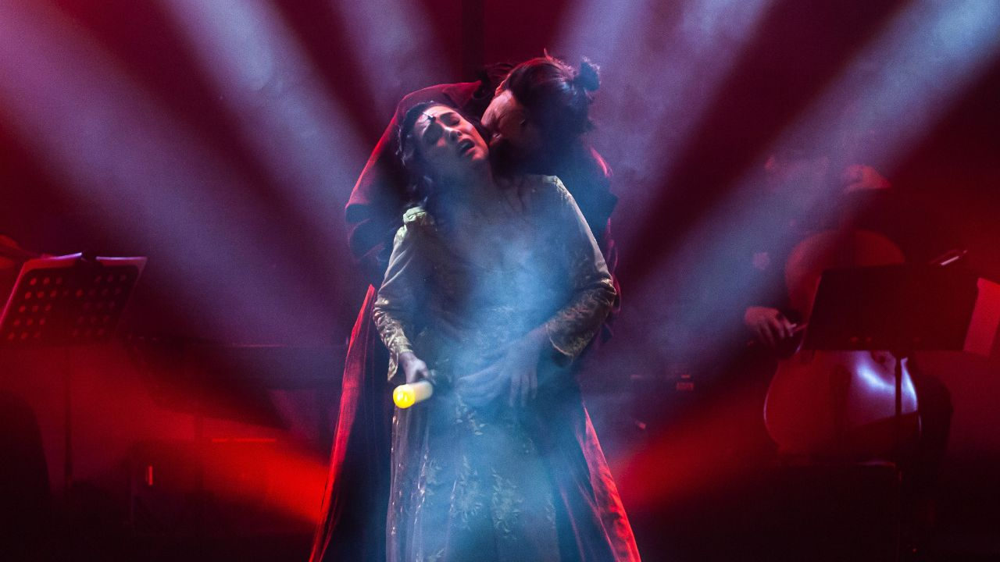
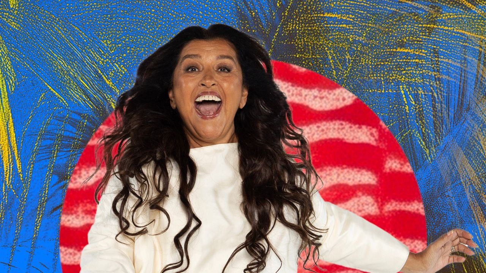
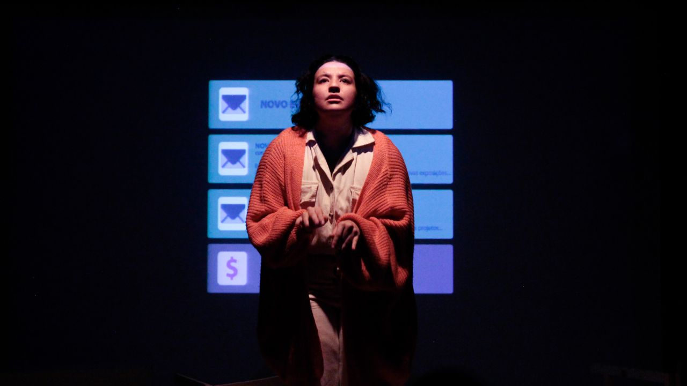

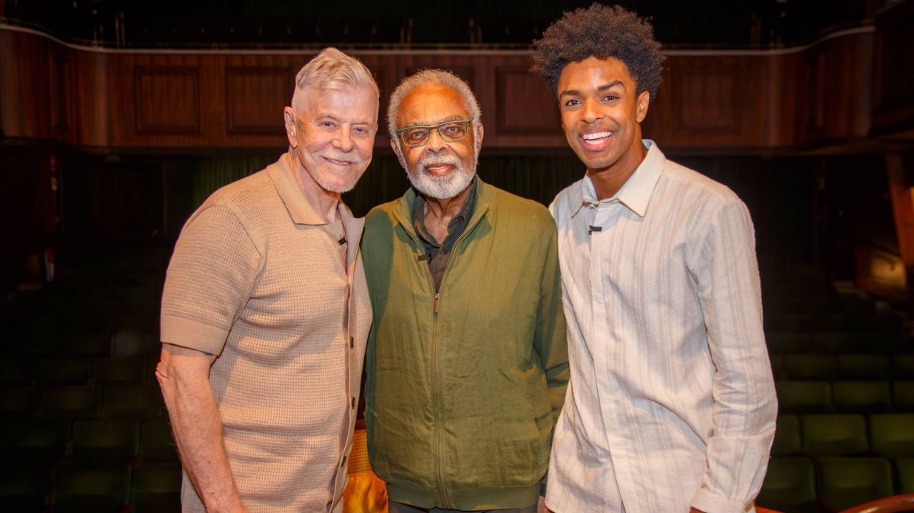

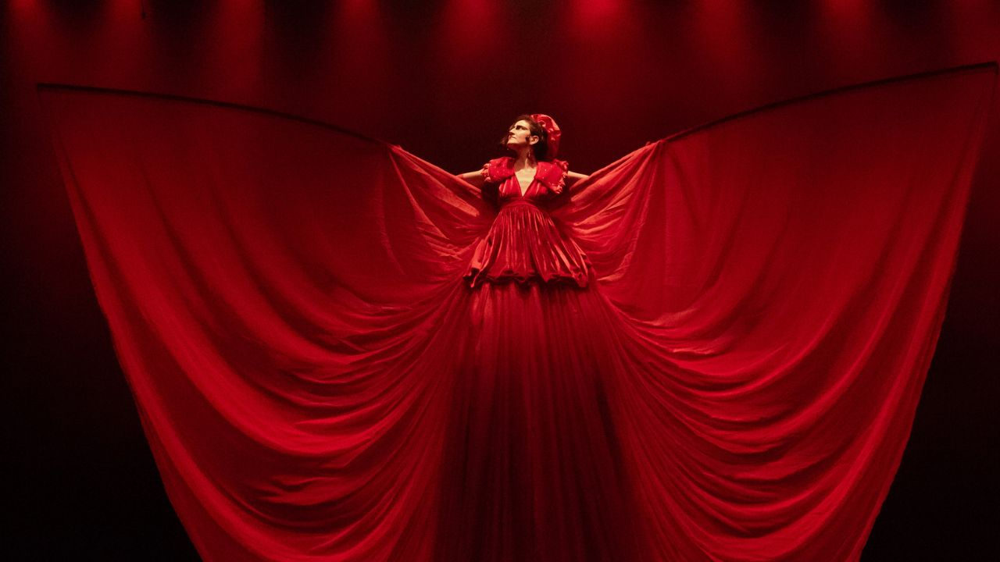
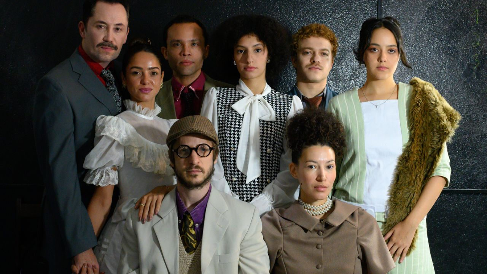
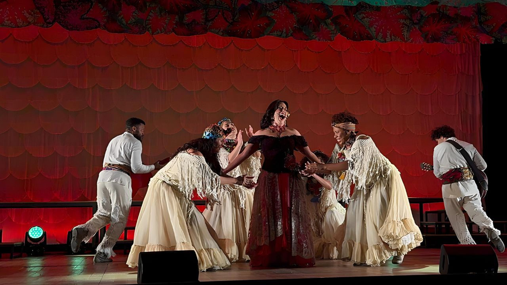
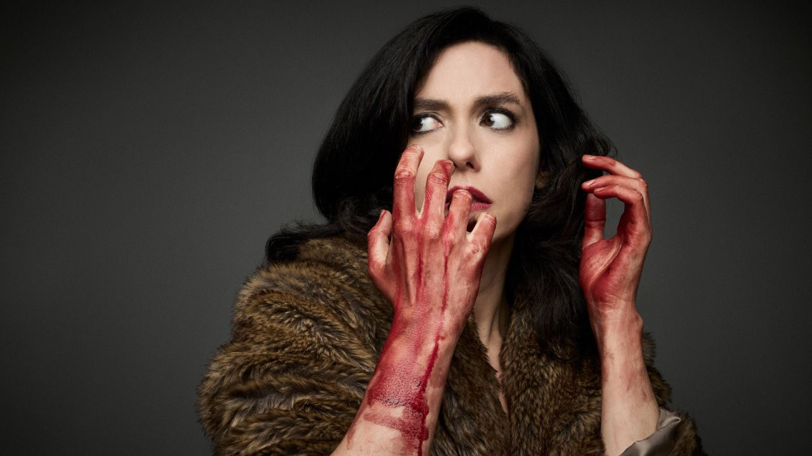
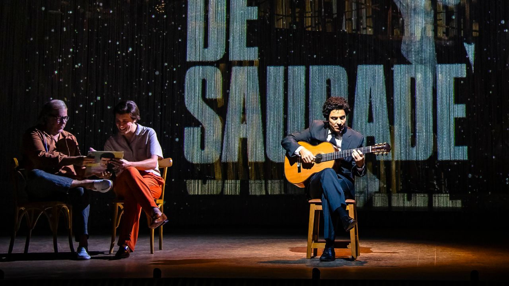
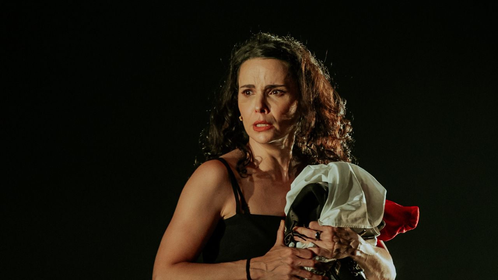
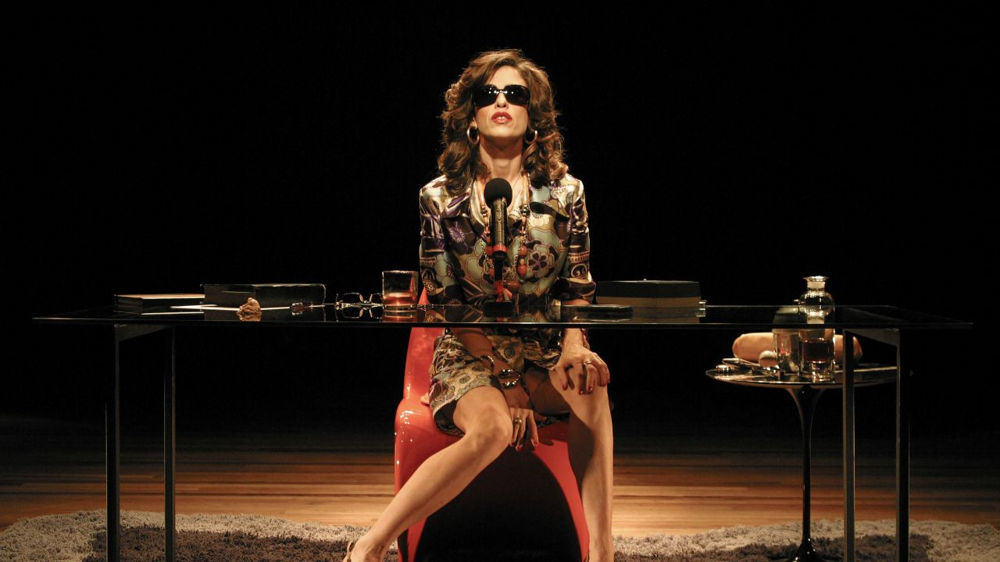
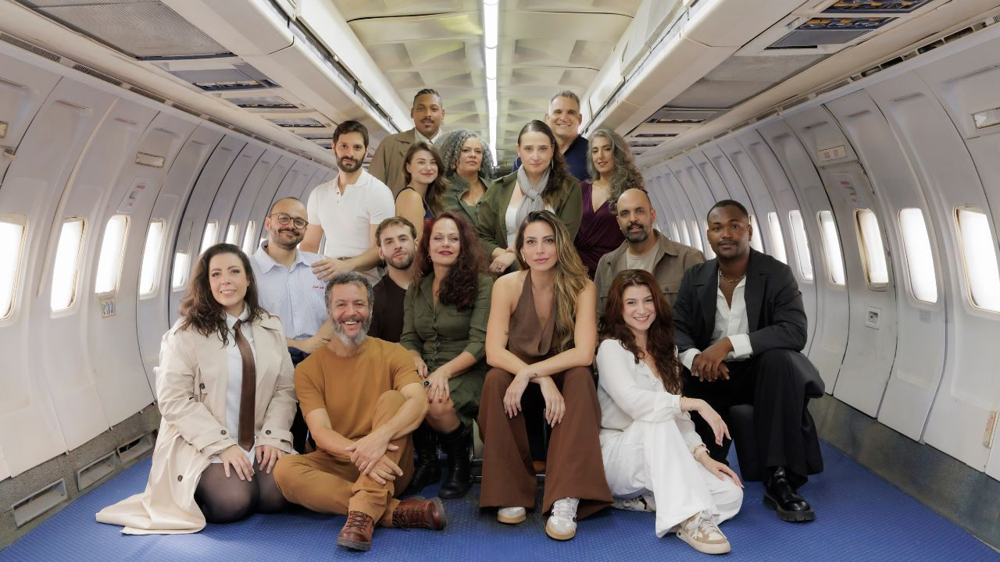